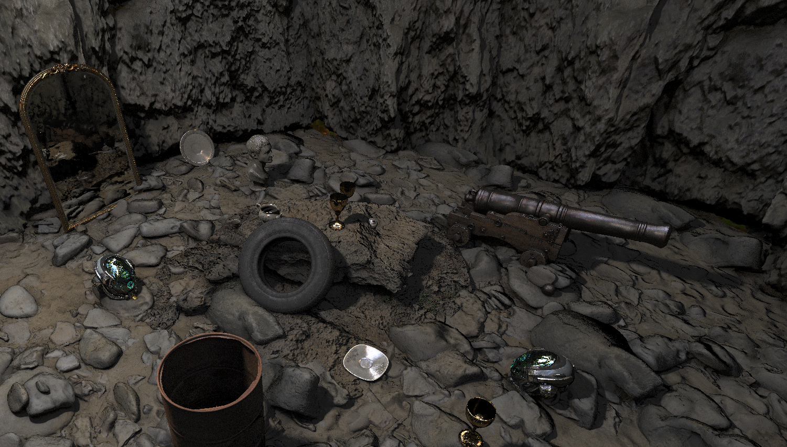
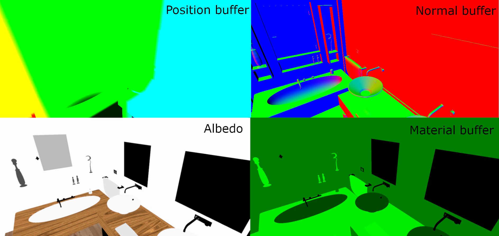
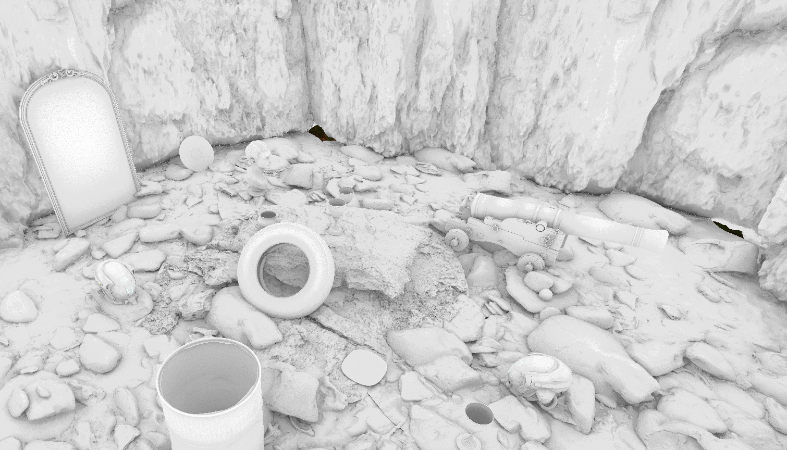
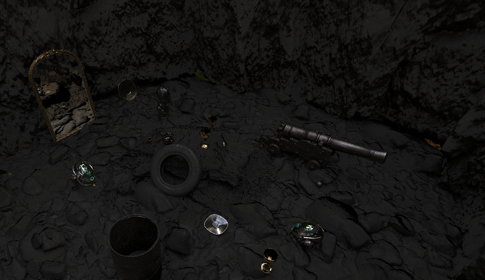
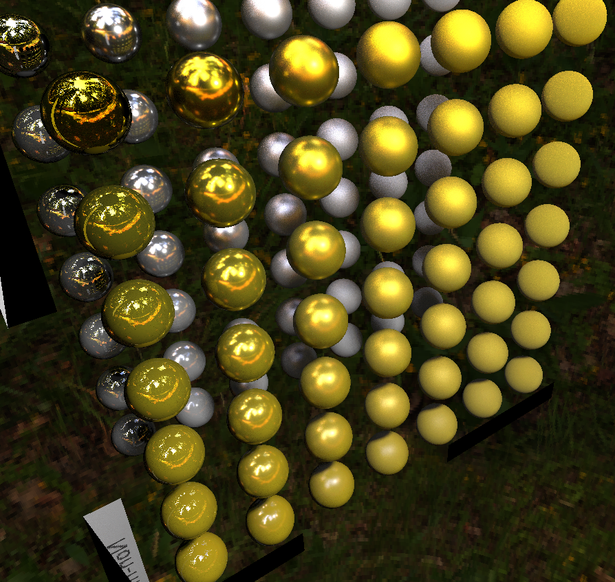

Overview #
If you’re here, I’m assuming you’re interested ray tracing. Cool. This article documents the creation of Hybrid RayTracer, which proved to be a great learning exercise when it comes to DX12, Ray Tracing and rendering in general.
I am going to describe my journey and the concepts I learned, along with the problems I encountered.
This project was my first experience with 3D ray tracing (and DXR), so please take all the information with a grain of salt.
If you are not experienced, I recommend watching this video as an introduction to ray tracing. While my article lays down the fundamental concepts, additional visual context can enhance your understanding.

The plan: #
My focus was on building a ray tracer that would run in real time. For that purpose, I chose to implement the following features:
-
Hybrid Pipeline
-
Shadows
-
Reflections
-
Ambient Occlusion
-
Refractions
-
Support for multiple lights
In the limited time I had (8 weeks), I only managed to implement the bolded features above.
Some basic theory #
Hybrid Ray Tracing #
A hybrid ray tracing pipeline involves a rasterization pass, creating a G-Buffer for scene reconstruction in the ray tracer.
Using a rasterizer to write a G-Buffer #
A G-Buffer comprises multiple textures that hold data about the scene’s geometry from the camera’s viewpoint. This step uses a rasterizer to render multiple render targets containing screen space information about the scene.

For my project, I used four render targets to store the world positions of pixels, surface normals, albedo color, and material information (roughness and metallic properties).
Why do this? #
Rasterizers are fast, so leveraging a G-Buffer to avoid the need for primary rays(the rays traced from the camera towards the scene) in the ray tracer boosts performance, particularly on older hardware not optimized for ray tracing.
Using the G-Buffer in the ray tracer #
Normally, a ray has to be traced for each of the pixels on the screen, from the camera to the scene. Each ray has to be checked against the geometry in the scene and return values like color or distance.
All of the data that that is collected with the primary rays, can also be collected from the G-Buffer with a lower performance cost.
Textures in the ray generation shader access this data, aiding in tracing other ray types like shadow, reflection, and ambient occlusion rays.
Capabilities of this Ray Tracer #
This distributed ray tracer traces multiple samples for each effect and integrates their contributions. While this process introduces noise due to its sthocastic nature, more samples yield results closer to realistic illumination. Past frame samples can also be used for refinement.
Shadows #
Realistic shadows require a smooth falloff, as lights in reality are not point sources but areas, causing the light to fall unevenly around an object’s shadow, making it softer towards the edges.
Soft shadows and are achieved by tracing multiple samples towards the light source. Each ray targets a random point on the light source, making edge-near samples less likely to intersect the shadow-casting object.
By summing up all the sampled results, the shadow becomes smoother towards the edges.
Ambient Occlusion #
Ambient occlusion helps with defining the environmental occlusion of the ambiental light. This is achieved by tracing rays in random directions from a surface and using the number of hits and the distances to impacted geometry to determine surface occlusion.

Reflections and PBR #
The reflections are the part of indirect lighting, that are affected by the angle of incidence(between the light ray and the surface normal) and the angle of the camera relative to the reflected ray.
In ray tracing, light calculation is reversed compared to real life. A ray sent from the camera to a surface uses the angle with the surface normal to compute the reflected ray, which then interacts with other illuminated geometry.
PBR (Physically Based Rendering) enhances realism. It defines material properties with two values: roughness and metallic. The Cook-Torrance microfacet model, a widely used illumination model, considers surfaces as collections of tiny, perfectly reflecting microfacets.
Roughness affects the scattering of these microfacet angles. In ray tracing, this translates to sampling random microfacet directions, with the distribution based on a mathematical formula. We then use the angle of the microfacets instead of the surface normal, to calculate the reflected rays. Different angles lead to varied light contributions, altering the material’s appearance.
The metallic value influences each reflection ray’s contribution.

Firefly reduction #
Firefly reduction is a method of filtering noise, targeting the elimination of abnormally bright pixels. These bright spots, often referred to as ‘fireflies’, arise from sampling directions that, while low in probability, yield disproportionately high energy. This could employ loss of energy throughout the scene, since removing the bright pixels means removal of energy. However, this loss could be a worthwhile sacrifice for the significant improvement it brings to the image quality.
My journey implementing all this in DXR #
Setting up DXR #
As a code base for this project, I used my previous DX12 rasterizer project.
I started with my DX12 rasterizer project, setting up the DXR pipeline, shader tables, resource descriptor heap, and acceleration structures using NVIDIA’s DXR helpers. Here you can find the Nvidia tutorials on doing all this.
The helpers they provided had some issues with the shader table allignment, requiring manual adjustments in “ShaderBindingTableGenerator.cpp”, changing the miss shader entry size to allign to 64 bytes.
Shadows and Random numbers on GPU #
Once I reached this stage, I decided to deviate from my initial plan and prioritize the implementation of shadows. This approach would provide a feature to test the effectiveness of the hybrid pipeline.
Implementing Shadows #
To implement this, I used a function to generate a random point within a unit sphere. This vector is then scaled by the size of the light source and added to the light’s position. Using this calculated position, I determine the direction and length of the ray from the shaded surface to the random point.
for (int i = 0; i < sample_count; i++)
{
//generating a random point in a sphere
float3 sphere = RandomInUnitSphere(i * 7127 + seed1, i * 20749 + seed2, i * 6841 + seed3);
float3 lightPos;
lightPos = light.light_position + sphere * light.size;
float3 lightDir = lightPos - hitLocation;
I made sure to avoid calling a closest hit shader since it would be unnecessary (free performance!). I use 2 flags for the TraceRay function to bypass unnecessary checks, resulting in only the miss shader being called, which returns a value of false.
...
ShadowHitInfo shadowPayload;
shadowPayload.isHit = true; // by default, isHit is set to true, and is only changed if the miss shader is executed
uint rayFlags = RAY_FLAG_ACCEPT_FIRST_HIT_AND_END_SEARCH | RAY_FLAG_SKIP_CLOSEST_HIT_SHADER;
TraceRay(SceneBVH, rayFlags, 0xFF, 0, 0, 0, ray, shadowPayload);
...
When the miss shader is invoked, a counter tracking the hits is incremented. After iterating through all the samples, the counter is divided by the total number of samples, yielding the shadow’s intensity at that specific surface point. This value is then multiplied with the direct illumination radiance.
...
...
// incrementing the counter if no geometry is hit
counter += !shadowPayload.isHit;
}
return (float(counter) / float(sample_count));
In my project, I only have support for one single point light, which makes things much simpler. Here’s some directions for multiple light support.
Random numbers on the GPU #
Generating random numbers presented a unique challenge, as I discovered HLSL lacks a built-in function for this purpose. Based on my research, the best function to do this would be a PCG HASH. It has both great distribution and is fast compared to other methods.
uint pcg_hash(uint input)
{
uint state = input * 747796405u + 2891336453u;
uint word = ((state >> ((state >> 28u) + 4u)) ^ state) * 277803737u;
return (word >> 22u) ^ word;
}
This function returns pseudo-random numbers, requiring a distinct seed for each pixel or sample to ensure randomness. Various elements can be used to construct this seed, such as the launch index of the ray(for good distribution,both x and y of the launch index should be used), or the world position of the fragment.
For temporal accumulation, incorporating the frame index into the seed proved necessary. Additionally, varying the seed with each sample’s index helps generate distinct values for each. To minimize correlation between these values, it’s ideal to multiply the seed components with large prime numbers.
//precalculating the invariable part of the seed outside the loop
float seed1 = launchIndex.x * 4057 + launchIndex.y * 17929 + frame * 7919;
float seed2 = launchIndex.x * 7919 + launchIndex.y * 5801 + frame * 4273;
float seed3 = launchIndex.x * 5801 + launchIndex.y * 7127 + frame * 13591;
for (int i = 0; i < sample_count; i++)
{
//using the precalculated seed and the sample index
float3 sphere = RandomInUnitSphere(i * 7127 + seed1, i * 20749 + seed2, i * 6841 + seed3);
Reflections #
For the reflections, I used a GGX microfacet distribution function that would generate the normal of a microfacet within a cone. The angle of these microfacets is linked to the material’s roughness. The generated microfacet is used to reflect the ray originating from the camera and then trace the ray in this newly calculated direction.
// the GGX distribution function for the rays
float3 GGXMicrofacet(uint randSeed, uint randSeed2, float roughness, float3 normal)
{
//generating random values based on the seed
float2 randVal;
randVal.x = float(pcg_hash(randSeed)) / 0xFFFFFFFF;
randVal.y = float(pcg_hash(randSeed2)) / 0xFFFFFFFF;
//calculate tangent/bitangent based on the normal
float3 up = abs(normal.y) < 0.999 ? float3(0, 0, 1) : float3(1, 0, 0);
float3 tangent = normalize(cross(up, normal));
float3 bitangent = cross(normal, tangent);
//sample the normal distribution
float a = roughness * roughness;
float a2 = a * a;
float cosThetaH = sqrt(max(0.0f, (1.0 - randVal.x) / ((a2 - 1.0) * randVal.x + 1)));
float sinThetaH = sqrt(max(0.0f, 1.0f - cosThetaH * cosThetaH));
float phiH = randVal.y * 3.14159f * 2.0f;
return tangent * (sinThetaH * cos(phiH)) + bitangent * (sinThetaH * sin(phiH)) + normal * cosThetaH;
}
//generate a microfacet
float3 H = GGXMicrofacet(pcg_hash(i * 7127 + rand1), pcg_hash(i * 20749 + rand2),
roughness, normal);
//reflect the incident Ray(or the view ray)
float3 L = normalize(2.f * dot(normalize(-incidentRay), H) * H - normalize(-incidentRay));
RayDesc ray;
ray.Origin = hitLocation;
ray.Direction = L;
...
...
//trace the ray using the ray description
TraceRay(SceneBVH, RAY_FLAG_NONE, 0xFF, 0, 0, 1, ray, relfectionPayload);
Tracing the Reflection Ray #
When tracing the reflection ray, the hit shader returns the color and distance to the point of impact. Utilizing this distance, along with the ray’s direction and origin, I calculated the precise location of the hit. This enabled me to trace additional shadow rays, making reflections more accurate. The traced shadows will be multiplied with the contribution of the ray, enriching the final illumination effect.
float3 r_hitLocation;
r_hitLocation = hitLocation + L * relfectionPayload.colorAndDistance.w;
float shadow = TraceShadowRays(r_hitLocation, reflected_shadow_SC, launchIndex, frame_index);
Light Contribution and Cook-Torrance BRDF #
For the contribution of the incoming light, I used a Cook-Torrance BRDF(Bidirectional Reflectance Distribution Function ). This involved the computation of the GGX normal distribution, geometry factor, and Fresnel effect, key components that influence how light interacts with surfaces. More on PBR here.
// calculating all the dot products required for this BRDF
float NoV = clamp(dot(normal, normalize(-incidentRay)), 0.0, 1.0);
float NoL = clamp(dot(normal, L), 0.0, 1.0);
float NoH = clamp(dot(normal, H), 0.0, 1.0);
float VoH = clamp(dot(normalize(-incidentRay), H), 0.0, 1.0);
float LdotH = clamp(dot(L, H), 0.0, 1.0);
float3 F = fresnelSchlick(VoH, F0);
float D = DistributionGGX(NoH, max(roughness, 0.00001));
float G = GeometrySmith(NoV, NoL, roughness);
float3 BRDF = D * F * G / max(0.00001, (4.0 * max(NoV, 0.00001) * max(NoL, 0.00001)));
Calculating Reflection Probabilities #
Achieving accurate reflections necessitated the calculation of probabilities for choosing specific directions for the reflection rays. For this, I utilized a probability density function based on the GGX distribution, ensuring that each reflection direction contributed to the final image with consideration to its likelihood.
float GGXProb = D * NoH / (4 * LdotH);
Integrating Contributions for Final Pixel Color #
After adding up all the contributions from all the samples, I divided the result by the number of samples. The returned value is added to the direct illumination, forming the final color of the pixel.
//adding the sample contribution in the loop
color_r = color_r + relfectionPayload.colorAndDistance.rgb * (NoL * GGXBRDF / (GGXProb)) * shadow;
}
return (color_r) / float(reflection_SC);

Hybrid pipeline #
For my hybrid pipeline, I am using 4 buffers. For each of them I stored one render target descriptor in a descriptor heap designated for render targets, and one UAV descriptor in the descriptor heap designated for the resources used in ray tracing pass(UAV’s are nice because they allow both reading and writing). This way,I can use the same resource for both the rasterizer and for the ray tracer, without having to copy anything.
//Creating the RTV descriptors
CD3DX12_CPU_DESCRIPTOR_HANDLE rtvHandle(m_RTVDescriptorHeap->GetCPUDescriptorHandleForHeapStart());
m_posBuffer =
CreateRTVBuffer(device, rtvHandle);
m_normalBuffer = CreateRTVBuffer(device, rtvHandle);
//the same for all the other buffers
//creating the UAV descriptors
D3D12_CPU_DESCRIPTOR_HANDLE srvHandle = m_srvUavHeap->GetCPUDescriptorHandleForHeapStart();
{
D3D12_UNORDERED_ACCESS_VIEW_DESC uavDesc = {};
uavDesc.ViewDimension = D3D12_UAV_DIMENSION_TEXTURE2D;
m_device_manager->m_Device->CreateUnorderedAccessView(m_device_manager->m_posBuffer.Get(), nullptr, &uavDesc, srvHandle);
srvHandle.ptr +=
m_device_manager->m_Device->GetDescriptorHandleIncrementSize(D3D12_DESCRIPTOR_HEAP_TYPE_CBV_SRV_UAV);
}//this part is the same for all buffers
Binding Render Targets and Managing Resource States #
The render targets integrated into the the pipeline through the OMSetRenderTargets function. It is crucial to accurately reference the position within the descriptor heap of the render targets when creating the CPU descriptor handles.
//creating an array of CPU descriptor handles for the buffers
CD3DX12_CPU_DESCRIPTOR_HANDLE rtv[4];
rtv[0] = CD3DX12_CPU_DESCRIPTOR_HANDLE(m_device_manager->m_RTVDescriptorHeap->GetCPUDescriptorHandleForHeapStart(), 3,
m_device_manager->m_RTVDescriptorSize);
rtv[1] = CD3DX12_CPU_DESCRIPTOR_HANDLE(m_device_manager->m_RTVDescriptorHeap->GetCPUDescriptorHandleForHeapStart(), 4,
m_device_manager->m_RTVDescriptorSize);
rtv[2] = CD3DX12_CPU_DESCRIPTOR_HANDLE(m_device_manager->m_RTVDescriptorHeap->GetCPUDescriptorHandleForHeapStart(), 5,
m_device_manager->m_RTVDescriptorSize);
rtv[3] = CD3DX12_CPU_DESCRIPTOR_HANDLE(m_device_manager->m_RTVDescriptorHeap->GetCPUDescriptorHandleForHeapStart(), 6,
m_device_manager->m_RTVDescriptorSize);
// binding them to the pipeline
m_device_manager->GetCommandList()->OMSetRenderTargets(_countof(rtv), rtv, FALSE, &dsvHandle);
For developers utilizing ImGUI, it’s important to bind your back buffers using OMSetRenderTargets before executing the rendering process for ImGUI.
An important aspect of managing these resources is the transition of their states. Post-rasterization, the resource states are shifted from RTV (Render Target View) to UAV, and then reverted to the RTV state after the ray tracing pass.
//transitioning the resource states
CD3DX12_RESOURCE_BARRIER barrierrr5 = CD3DX12_RESOURCE_BARRIER::Transition(
m_device_manager->m_posBuffer.Get(), D3D12_RESOURCE_STATE_RENDER_TARGET, D3D12_RESOURCE_STATE_UNORDERED_ACCESS);
CD3DX12_RESOURCE_BARRIER barrierrr6 = CD3DX12_RESOURCE_BARRIER::Transition(
m_device_manager->m_normalBuffer.Get(), D3D12_RESOURCE_STATE_RENDER_TARGET, D3D12_RESOURCE_STATE_UNORDERED_ACCESS);
...
...
{
D3D12_RESOURCE_BARRIER barriers[5] = {barrierrr5, barrierrr6, barrierrr7, barrierrr8, barrierrr9};
m_device_manager->GetCommandList()->ResourceBarrier(5, barriers);
}
Preparing for Ray Tracing #
Prior to calling DispatchRays, the descriptor heap containing the views for the necessary resources must be bound to the pipeline. This step is crucial for the seamless functioning of the ray tracing process.
std::vector<ID3D12DescriptorHeap*> heaps = {m_resource_manager->m_srvUavHeap.Get()};
m_device_manager->GetCommandList()->SetDescriptorHeaps(static_cast<UINT>(heaps.size()), heaps.data());
Utilizing the G-Buffer #
An efficient approach in this pipeline is the use of the G-Buffer as an SRV (Shader Resource View) during the ray tracing pass. Given that no writing is performed on these resources at this stage, an UAV is not necessary.
Accessing the G-Buffer in the ray generation shader is very convenient. The texture is declared as an array, with the offset from the first UAV in the descriptor heap serving as an index to access the desired texture.
RWTexture2D<float4> uavTextures[] : register(u0);
The data collected from the texture is then used for the computation of the shadows, reflections, ambient occlusion and direct lighting.
// extracting the data from the shaders
float3 hitLocation = uavTextures[1][launchIndex].rgb;
float3 albedo = uavTextures[3][launchIndex].rgb;
float3 norm = uavTextures[2][launchIndex].rgb;
float roughness = uavTextures[4][launchIndex].g;
float metallic = uavTextures[4][launchIndex].b;
Ambient Occlusion #
Ambient occlusion was the simplest feature to implement, yet it’s a feature with a great impact, adding depth and realism to the scene.
Generating Rays for Ambient Occlusion #
The process begins with the generation of a random point on a hemisphere, oriented around the surface normal at each point of the geometry. The ray is traced in the direction of these generated points.
//generate random direction in the hemisphere
float3 dir = RandomInHemisphere(normal, float(pcg_hash(i * 7127 + randAo1)), float(pcg_hash(i * 20749 + randAo2)));
// set the ray description
RayDesc ray;
ray.Origin = hitLocation;
ray.Direction = normalize(dir);
ray.TMin = 0.01f;
ray.TMax = g_RayLength;
-
No Hit Scenario: If a ray does not intersect with any geometry, it indicates that the point is unobstructed and receives full ambient light. In such cases, a counter is incremented by 1, representing complete exposure to ambient light.
-
Hit Scenario: When a ray intersects with geometry, the hit shader returns the distance to the point of impact. This distance is used to calculate the amount of occlusion. The counter is incremented by the ratio between the returned distance and the ray’s maximum length.
//calculate the contribution of every ray based on distance
if (aoPayload.distance > 0)// the miss shader returns -1, the hit shader returns the actual distance
{
float occlusionFactor = (aoPayload.distance / g_RayLength);
occlusion += pow(occlusionFactor, g_OcclusionPower);
}
else
occlusion += 1;
The counter is then divided by the number of samples and the returned result is then multiplied with the direct illumination radiance.
final_color = radiance * shadow * ambient_occlusion + reflection + emissive;
Firefly Reduction #
I used a very crude algorithm that uses the brightness of the surrounding pixels. I only cap the brightness of the reflection, since that is the only effect that creates fireflies in my application.
This algorithm uses an user input value as a threshold, to keep the pixels that are not bright from being changed. I calculate average color for the surrounding pixels and then I used the value to bring the bright value of the current pixel down.
//check the brightness of our current pixel
if (dot(reflection, reflection) > firefly_reduction)
{
//calculate average color for surrounding pixels
float3 med = (uavTextures[0][launchIndex + uint2(0, 1)] + uavTextures[0][launchIndex + uint2(0, -1)] +
uavTextures[0][launchIndex + uint2(1, 0)] + uavTextures[0][launchIndex + uint2(-1, 0)] +
uavTextures[0][launchIndex + uint2(-1, -1)] + uavTextures[0][launchIndex + uint2(-1, 1)] +
uavTextures[0][launchIndex + uint2(1, 1)] + uavTextures[0][launchIndex + uint2(1, -1)]) /
9;
//if the current pixel is brighter than the average, its color value is multiplied by the brightness of the surrounding pixels
if (dot(reflection, reflection) > dot(med, med)) reflection = reflection * dot(med, med);
}
Conclusions #
The information presented here is minimal, but hopefully, it sparks interest in this field. This project proved to be a great source of knowledge for me, and I totally recommend giving it a try.
Based on my experience, DX12 was a great API to use for this purpose. Admittedly, the learning stage was challenging. Yet, once mastered, DX12 proved to be an exceptionally powerful tool
This project lays the groundwork for further exploration and the integration of more advanced features.
For those seeking to dive deeper into this field, here are some of the resources I used:
This helped me implement PBR: this is a series of tutorials on creating a DXR hybrid renderer
Nvidia tutorial series for DXR:Lays down the basics of using DXR
Ray Tracing gems: A series of papers on ray tracing. Part VI talks about Hybrid approaches.
Microsoft documentation for DXR: Could prove useful if the nvidia helpers create issues or if you don’t want to use them